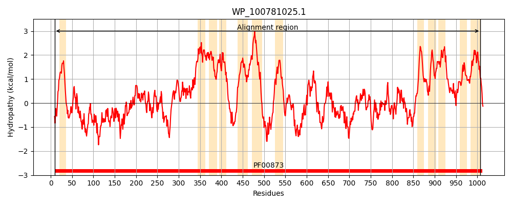
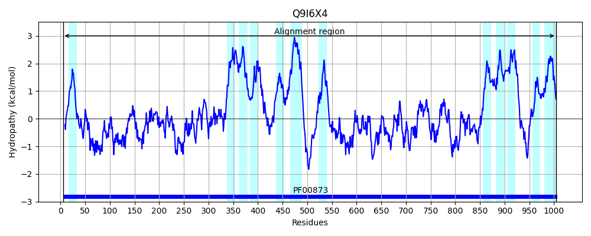
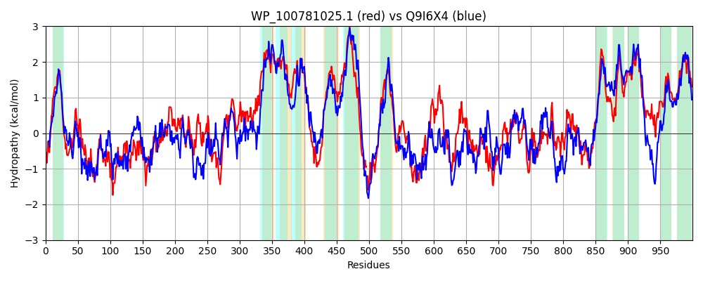

Hit Accession: Q9I6X4
Hit TCID: 2.A.6.2.27
Hit Description: gnl|BL_ORD_ID|18279 gnl|TC-DB|Q9I6X4|2.A.6.2.27 Probable Resistance-Nodulation-Cell Division - Pseudomonas aeruginosa.
Mach Len: 1000
e:0.000000
Query TMS Count : 12
Hit TMS Count: 12
TMS-Overlap Score: 10.450000
Predicted Substrates:CHEBI:29697;triclosan
BLAST Alignment:
Score: 2473 , Bit scores: 957 bits, E-value: 0.0e+00, Alignment length: 1000, Percentage identity: 49
Query: 9 FNLSSWALNHQQMVSFFMLLIIAMGAFCYENLPRNEDPAFTIKTAVVSAQWPGASVTDTTRLLTDTLEKKLQETPWLDYLESETRAGSSVIHVNLRDDTPPQKVPDIWYQVRKKMQDIAPSLPEGVQGPAVDDEFDDTYGTIYGFIPEGYTLREVRDRVETIRRELMSLPDIGKTSLLGEQQEQIVLSFSPARLAGMGLNIQQVADALRAQNAVVPAGMIRTGQENMAIKVSGELTSEASLRAVTLHINDRYLPLTDIATVSRENAEPPQPVYRVNGKPAIGLAISMAPTGNMLRFGAALNAKMQAISVTLPHGIEMVKVADQSAVVSDAVSGFIRVLIEAVAIVLAVSFVSLGLRAGLVVAAAIPLVLAMTFTGMMLAGIGLQRISLGALIIALGLLVDDAMITVETMVSGLEAGDSRRQAATRAFKTTAFPMLTGTLVMIAGFIPVGFAASSAGEYCFSLFAVVLIALLCSWVVAILFSPLTGTWLLSDNIRQKA-KGPGRMARGYQWLLRKALRHRFATVCLALIALGLSVYGTTFMQGEFFPASDRPELLVSLTLPANASQSETQNTAEKLEKALAGNRNVERFSTYVGSGAIRFYLPMDVLLANENIAQIVVVAKDLKARDRLHRQLNRILATGFSDIITRVSPLELGPPVGWPVKYRVSGPDYLKVRSIANRLSDVIGRSPSSREVNQTAGEPERVITLKVNQTAARAAGVSSESLARMLNTVWSGSIVTSVRDNDRLVDVVLRARDNERLNLATFSSLTIQGNDGKQIPLSAFATPVWGVDDPVIWRRQRLPFITVQTDLAPGLRAEAVSAALRPAVDRLRAELPEGYSIEEGGAVAESEKGNSSVYAILPVTLVIMLLLLMPQLRNYSRMALAILMAPFGLPGIVLAMLPGGTPMGFVALLGVIALAGMIIRNAVILISEVDSNLAQGMASDAAIIAAAEHRARPICLTACAAILGMIPISHQVFWGPMAYAIIGGLLVATLVTLTVLPASF 1007
FNLS WAL HQ +V + M + + MG F Y NL R EDP+F IKT V+ +WPGA+V DT +TD +EKKL+E LDY++S TR G S + V L+D T +PDIWYQVRKK+ DI P+G+QGP +DEF D +G++Y F +G R++RD VE +R ++ S+ D+GK ++G Q E I L+FS +LA +GL+ +QV +L+AQNAV P+G++ G E ++++ SG SE L+AV L +NDR+ L+D+A++SR+ +PP ++R G+PAIGLA++M GN+L FG ALNA+MQ I+ LP G+ + +V++Q+ VV AV GF R L EAV IVL VSFVSLGLRAGLVVA +IPLVLAM F M I +QR+SLGALIIALGLLVDDAMITVE M++ LE GDS +AT A+ +TAFPMLTGTLV +AGF+P+G ASSAGEY F+LFAV+ +ALL SW+VA+LF+P+ +L ++ K+ + GR+A + LL A+R R+ T+ L + G+S++ F+Q +FFP+SDRPELLV L LP N+S ET+ ++LE L + +++ +S YVG GAIRFYLP+D L N Q+V+V KDL+AR+R+ +L L + I T V PLE+GPPVG P++YRVSGP KVR A L+ V+ +P+ ++ EP +++ + + Q AR G+SSE +A+++N+V +GS VT VRD+ LV+V+ RA D+ER +L T SL I G IPL AFA + ++ P++WRR R P ITV+ L ++ + A L P V R LP Y IE GG V ES K + ++P+ L +M LM QL++ ++ L +AP GL G+V A+LP GTPMGFVA+LG++AL G+IIRN+VIL++++D+ G A++ A HR RPI LTA AA LGMIPI+ +VFWGPMAYA+IGG++ ATL+TL LPA +
Sbjct: 5 FNLSDWALRHQSLVWYLMAVSLVMGVFSYLNLGREEDPSFAIKTMVIQTRWPGATVDDTLEQVTDRIEKKLEELDSLDYVKSYTRPGESTVFVYLKDTTKAGDIPDIWYQVRKKISDIQGEFPQGIQGPGFNDEFGDVFGSVYAFTADGLDFRQLRDYVEKVRLDIRSVKDLGKVQMIGAQNEVIYLNFSTRKLAALGLDQRQVVQSLQAQNAVTPSGVVEAGPERISVRTSGNFRSEKDLQAVNLRVNDRFYRLSDLASISRDFVDPPTSLFRYKGEPAIGLAVAMKEGGNILEFGEALNARMQEITGELPVGVGVHQVSNQAQVVKKAVGGFTRALFEAVVIVLIVSFVSLGLRAGLVVACSIPLVLAMVFVFMEYTDITMQRVSLGALIIALGLLVDDAMITVEMMITRLELGDSLHDSATYAYTSTAFPMLTGTLVTVAGFVPIGLNASSAGEYTFTLFAVIAVALLLSWIVAVLFAPVIAVHILPKTLKHKSEQKKGRIAERFDSLLHLAMRRRWTTIFLTALLFGVSLFLMKFVQHQFFPSSDRPELLVDLNLPQNSSIHETRAVMDRLEATLKDDEDIDHWSAYVGEGAIRFYLPLDQQLQNNFYGQLVIVTKDLEARERVAARLRDRLRKDYVGISTYVQPLEMGPPVGRPIQYRVSGPQIDKVREYAMGLAGVLDGNPNIGDIVYDWNEPGKMLKIDIAQDKARQLGLSSEDVAQIMNSVVTGSAVTQVRDDIYLVNVIGRAEDSERGSLETLESLQIVTPSGTSIPLKAFAKVSYELEQPLVWRRDRKPTITVKASLRGEIQPTDLVARLAPEVKRFADGLPANYRIEVGGTVEESGKAEGPIAKVVPLMLFLMATFLMIQLQSVQKLFLVASVAPLGLIGVVAALLPTGTPMGFVAILGILALIGIIIRNSVILVTQIDAFEKDGKTPWEAVLEATHHRTRPILLTAAAASLGMIPIAREVFWGPMAYAMIGGIVAATLLTLIFLPALY 1004 | Protein Hydropathy Plots: | |
|---|---|
|  |  |
Pairwise Alignment-Hydropathy Plot: | |
|  | |